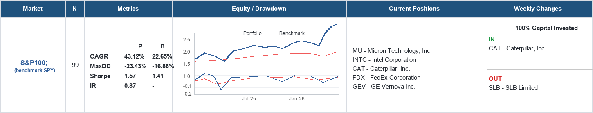

Report Overview
The TradingAlgo Mosaic Weekly Report is designed to provide a concise and systematic view of multiple global markets. Each market is represented by a portfolio of five stocks selected through a quantitative process based on trend strength and diversification criteria.

Step 1: Assess Performance
Start by reviewing the performance metrics:
- CAGR - Compound Annual Growth Rate
- MaxDD - Maximum Drawdown
- Sharpe Ratio
- Information Ratio
These metrics compare the TradingAlgo Mosaic portfolio (P) with its benchmark (B) and help evaluate both return and risk-adjusted performance.
A portfolio with a higher CAGR, higher Sharpe Ratio, and positive Information Ratio has historically delivered stronger results relative to its benchmark.
Step 2: Review the Five Selected Stocks
The Current Positions section displays the five stocks currently selected by the model for that market.
The selection process begins with a much larger universe of securities. TradingAlgo Mosaic evaluates trend strength, filters highly correlated candidates, and then constructs a concentrated portfolio of five stocks designed to provide both performance potential and diversification benefits.
These positions represent the model's current view of the most attractive opportunities within that market.
Step 3: Examine Weekly Changes
The Weekly Changes section shows how the portfolio has evolved since the previous report.
- IN identifies new positions entering the portfolio.
- OUT identifies positions that have been removed.
This section provides insight into how the model adapts to changing market conditions and shifting leadership trends.
Step 4: Analyze the Charts
Equity Curve
- Compares portfolio growth against the benchmark.
- Helps assess long-term value creation.
Drawdown Curve
- Shows historical declines from previous portfolio highs.
- Helps evaluate downside risk and capital preservation.
Together, these charts provide a quick visual assessment of both return and risk.
Capital Invested
The report also displays the percentage of capital currently allocated.
Examples include:
- 100% Capital Invested
- 80% Capital Invested
- 40% Capital Invested
Lower exposure may occur when fewer securities satisfy the framework's selection criteria.
Important Note
TradingAlgo Mosaic is a quantitative research and portfolio analysis framework.
The report documents the output of a systematic investment process and is intended exclusively for research, educational, and informational purposes.
It does not constitute investment advice, portfolio management, trading signals, or a recommendation to buy or sell any security.